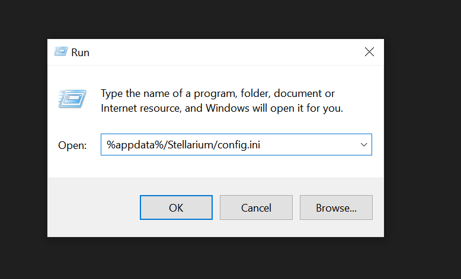
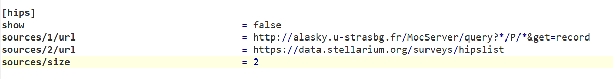
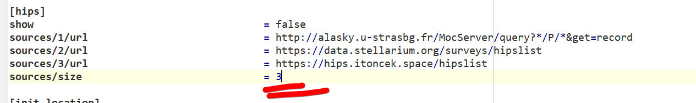

Návod na instalaci HIPS
1. krok: Příprava
Na instalaci HIPS z tohoto repozitáře do Stellaria budete potřebovat
- Stellarium (nečekané)
- Internetové připojení
- Windows
Nejdříve musíte najít soubor s nastavením Stellaria.
Obvykle se nachází v %appdata%/Stellarium/config.ini (Tuto adresu zadejte do řádku který si vyvoláte pomocí Win+R)

2. krok: Konfigurace
Nyní přijde ta nejtěžší část, v souboru, který se před vámi otevřel musíte najít sekci nazvanou HIPS. Pokud máte čistou instalaci Stellaria, měla by vypadat nějak takto:

Tuto sekci upravte aby vypadala takto (nezapomeňte změnit délku listu):

Teď soubor uložte a spusťte stellarium
3. krok: Zobrazení ve stellariu
Jakmile se stellarium nastartuje, zobrazte si okno Astronomických nastavení pomocí F3 nebo bočního panelu. V tomto okně přejděte do záložky Surveys ("Přehlídky oblohy" v češtině).